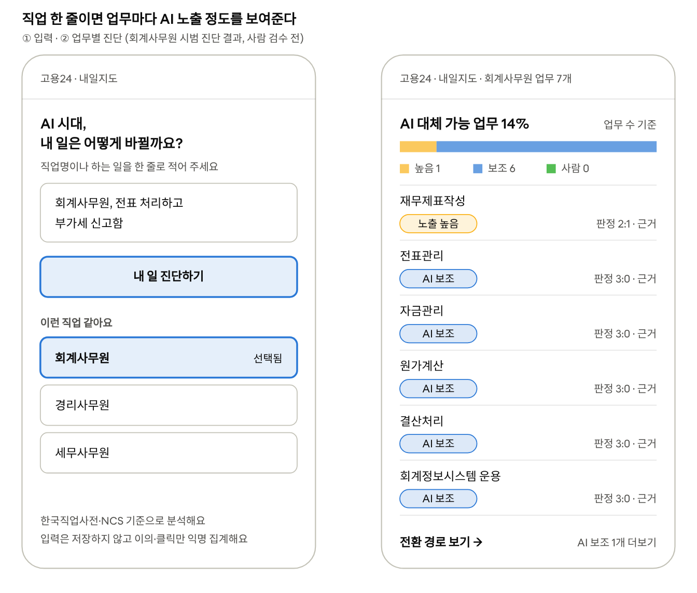
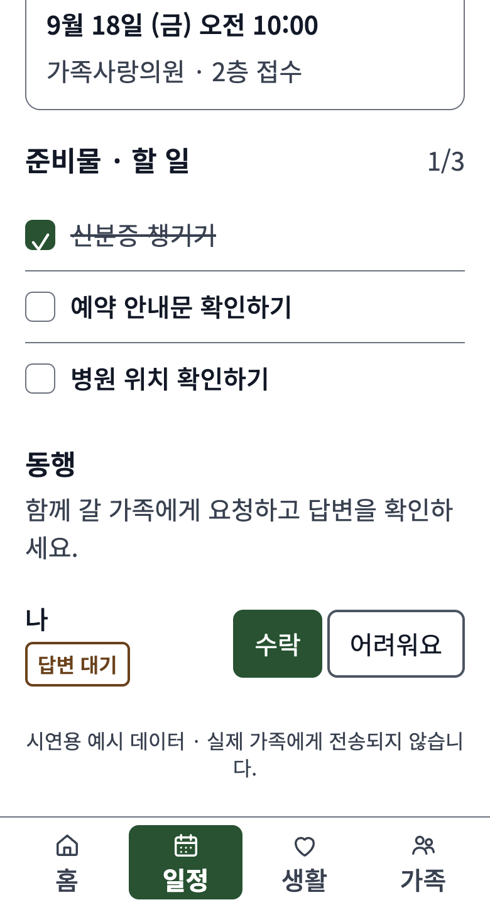
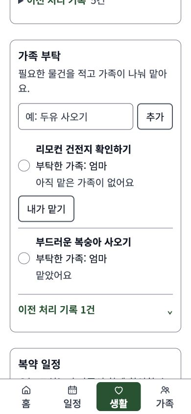

Selected work

2026 고용24 AI 고용서비스 해커톤 · 2인 팀
내일지도 — AI 시대, 내 일의 지도
LLM 판정자 3개로 업무 31개를 시범 진단하고, 판정이 갈린 42%는 사람이 검수하는 구조로 설계
직업명 한 줄로 내 업무를 NCS 능력단위로 나누고, 업무마다 AI 노출 정도와 인접 직업, 고용24 공고·훈련과정을 이어 주는 서비스입니다.
케이스 스터디 보기BidFit · 오늘의 공고 브리핑08:00
Go
공고 A필수 면허·지역 조건 충족 · 근거 URL 3건
Review
공고 B직접생산 확인서 보유 여부 확인 필요
No-go
공고 C지역 제한 불충족 (blocker)
구조를 설명하기 위한 예시 화면입니다.
Upstage MABC 2026 · 2인 팀
BidFit — 근거 없이 Go를 내지 않는 AI 업무 스킬
확인되지 않은 조건은 단정하지 않고 Review로 남겨, 사람이 판단할 지점을 분명히 한 공고 검토 에이전트
나라장터 공고와 회사 조건을 대조해 Go / Review / No-go로 나누고, 근거 URL·다음 행동·제안서 초안을 매일 아침 브리핑으로 전달합니다.
케이스 스터디 보기

제13회 전국 ICT융합 공모전 · 모두의 AI 실험실 · 5인 팀
토닥토닥 — 가족이 함께 챙기는 어르신의 하루
AI가 일정 후보를 뽑고, 가족이 원문과 대조해 확인한 일정만 저장하는 돌봄 서비스
병원 안내를 공유한 뒤에도 동행과 준비물을 다시 연락해 정해야 하는 가족의 조율 부담을, 확인부터 역할 분담까지 하나의 흐름으로 묶었습니다.
케이스 스터디 보기